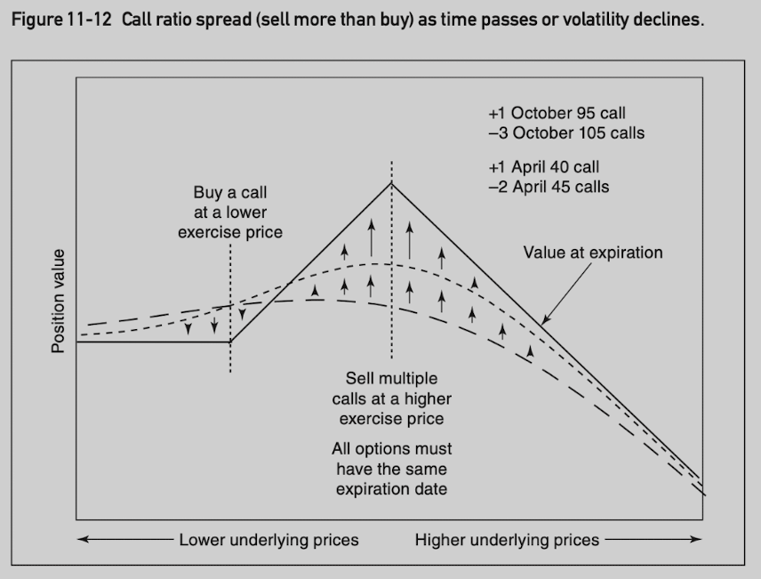

- 1 Financial Contracts
- 2 Forward Pricing
- 3 Contract Specifications and Option Terminology
- 4 Expiration Profit and Loss
- 5 Theoretical Pricing Models
- 6 Volatility
- 7 Risk Measurement I
- 8 Dynamic Hedging
- 9 Risk Measurement II
- 10 Introduction to Spreading
- 11 Volatility Spreads
- 12 Bull and Bear Spreads
- 13 Risk Considerations
1 Financial Contracts
- Forward contract: the parties agree on the terms now, but the actual exchange of money for goods does not take place util some later date, the maturity or expiration date.
- Future contract: when a forward contract is traded on an organized exchange, it is usually referred to as a futures contract.
- Option contract: an option contract gives one party the right to make a decision at a later date. A separate payment for the optional forward contract.
- Call option: give one party the right to decide whether to buy at a later date.
- Put option: give one party the right to decide whether to sell at a later date.
- Insurance contract: similar to a put option. A homeowner purchases insurance has the right to sell the home back tot he insurance company at a later date (e.g. if burned).
- Swap: is an agreement to exchange cash flows. The most common type, a plain vanilla interest-rate swap is an agreement to exchange fixed interest-rate payments for floating interest-rate payments.
Forwards, futures, options, swaps are priced based on their underlying asset. So they are commonly referred to as derivative contracts or simply derivatives.
Buying and Selling
- Opening trade: the first trade to take place, either buying or selling, resulting in an open position.
- Closing trade: a subsequent trade, reversing the initial trade.
- Open interest: the number of contracts traded on an exchange that have not yet been closed out. It is a widely used measure of trading activity in exchange-traded derivative contracts.
Long and Short
- Long position: result in a debit (pay money to buy)
- Short position: result in a credit (expect to receive money when sell)
- Long or short contract position: either bought or sold contracts.
- Long or short market position: want the underlying market to rise or fall.
Notional Value or Nominal Value
- Number of units to be delivered at maturity multiplied by the unit price.
Settlement Procedures
Depends on the rules of the exchange and the type of contract traded.
- Stock-type settlement: full and immediate payment, and all profits or losses are unrealized until the position is closed.
- Future-type settlement: an initial margin deposit followed by daily cash transfers (also known as margin and variation settlement). The exchange collects margin deposit from each party that it holds as security against possible default by the buyer or seller. On a daily basis, credit or debit due to fluctuations of the futures contract price (variation) are transferred between buyer and seller.
- Close positions before maturity: a final variation payment is done and margin deposit is returned to the trader.
- Carry positions to maturity (physical settlement): the seller makes delivery and the buyer pay an amount equal to the current value of the commodity. Margin deposits are returned. The buyer pays the current value because the buyer was credited in the form variation. If no daily variation settlment, then it should just pay the contract price.
- Cash-settled: no physical delivery takes place at maturity.
2 Forward Pricing
forward price = current cash price + cost of buying now - benefits of buying now
Basis: the difference between the cash price and the forward price. Usually a negative number.
| Instrument | Cost of Buying Now | Benefits of Buying Now |
|---|---|---|
| Physical commodity | Interest on cash price, storage costs, insurace costs | Convenience yield |
| Stock | Interest on stock price | Dividends, interests on dividends |
| Bonds and notes | Interest on bond or note price | Coupon payments, interest on coupon payments |
| Foreign currency | Interest cost of borrowing the demestic currency | Interest earned on the foreign currency |
Physical Commodities
C = commodity price
t = time to maturity of the forward contract
r = interest rate
s = annual storage costs per commodity unit
i = annual insurace costs per commodity unit
forward price F = C x (1 + r x t) + (s x t) + (i x t)
Contango (normal): long-term future contracts trade at a premium to short-term contracts.
Backward (in backwardation): cash price is greater than a future price.
Convenience yield: the premium to obtain the commodity right away. A sudden demand could surge the commodity price. Cash price can be inferred from future price using the forward price formula. If the cash price in the market is higher than the inferred cash price, the extra is the convenience yield.
C = (F - (s + i) x t) / (1 + r x t)
Stock
S = stock price
t = time to maturity of the forward contract
r = interest rate over the life of the forward contract
d[i] = each dividend payment expected prior to maturity
t[i] = time remaining to maturity after each dividend payment
r[i] = the applicable interest rate (forward rate) from each dividend payment to maturity
F = S + (S x r x t) - [d[1] x (1 + r[1] x t[1])] - ... - [d[n] x (1 + r[n] x t[n])]
S x (1+ r x t) - SUM[d[i] x (1 + r[i] x t[i])]
Bonds and Notes
B = bond price
t = time to maturity of the forward contract
r = interest rate over the life of the forward contract
c[i] = each coupon expected prior to maturity
t[i] = time remaining to maturity after each coupon payment
r[i] = applicable interest rate from each coupon payment to maturity
F = B x (1 + r x t) - SUM[c[i] x (1 + r[i] x t[i])]
Foreign Currencies
C[d] = domestic currency
r[d] = domestic interest rate
C[f] = foreign currency
r[f] = foreign interest rate
t = time to maturity
S = C[d] / C[f] = spot exchange rate
F = [C[d] x (1 + r[d] x t)] / [C[f] x (1 + r[f] x t)]
= S x (1 + r[d] x t) / (1 + r[f] x t)
Stock and Futures Options
Two most common classes of exchange traded options. Value of the option depends on forward price for the stock or futures. Forward price for a futures contract is the futures price.
Dividends
- Declared date: the date on which a company announces both the amount and the paid date.
- Ex-dividend date: the first day on which a stock is trading without the rights to the dividend.
- Record date: the date on which the stock must be owned in order to receive the dividend.
- Payable date: the date on which the dividend is paid to qualifying shareholders.
Short Sales
- Sell stock that one does not already own and hopes to buy back the stock at a later date at a lower price.
- Need to borrow the stock first.
- Brokerage firm holds the proceeds from the sale and pays the trader interest (only a portion of the full interest) on this amount. The received interest rate is also called short-stock rebate.
- The different between long rate (applies to ordinary borrowing/lending) and short rate (applies to short sale of stock) is called the borrowing costs.
3 Contract Specifications and Option Terminology
Contract Specifications
Type
- Call option: the right to buy or take a long position in an asset at a fixed price on or before a specified date.
- Put option: the right to sell or take a short position in an asset at a fixed price on or before a specified date.
- Difference between an option and a futures contract:
- futures contract: buyer/seller must take/make delivery
- option: can choose to take/make delivery. The seller is obligated to take the other side. All rights lie with the buyer.
Underlying
- Underlying asset (underlying): the security of commodity to be bought or sold under the terms of the option contract.
- Futures options: underlying is one futures contract.
- Midcurve options: Short-term options on long-term futures (options expire before futures contract maturity).
Exercise Price or Strike Price
- The price at which the underlying will be delivered should the holder of an option choose to exercise his right to buy or sell.
- Set by exchange.
Exercise and Assignment
The buyer of a call or a put option has the right to exercise that option prior to its expiration, converting the option into a long underlying position (call) or short underlying position (put).
Exchange choose randomly someone who has sold the option and has not closed out:
- Exercise a call: choose to buy at the exercise price.
- Are assigned on a call: required to sell at the exercise price.
- Exercise a put: choose to sell at the exercise price.
- Assigned on a put: required to buy at the exercise price.
Settlement
- Into physical underlying: stock is delivered with exercise price.
- Into a futures position: require margin deposit and accompanied by a variation payment.
- Into cash: cash payment euqal to the difference between the exercise price and the underlying price.
Exercise Style
- European: can only be exercised at expiration.
- American: can only be exercised on any business day prior to expiration.
Option Price Components
Option price (or premium) is determined by supply and demand. Has 2 components:
- Intrinsic value: euqal to the difference between the buying price and the selling price. E.g. a 400 call for a underlying at 435 has intrinsic value of 35.
- Call intrinsic value: Max(0, spot price - exercise price)
- Put intrinsic value: Max(0, exercise price - spot price)
- Independent of the expiration date.
- Classifications:
- In the money: any option that has a positive intrinsic value.
- Out of the money: no intrinsic value.
- At the money: Exercise price is equal (closest) to underlying price. Technically, is also out of the money, but has its own desirable characteristics.
- Time value (time premium or extrinsic value): the additional amount of premium beyond the intrinsic value that traders are willing to pay for an option.
- Trading at parity: an option’s time value is 0.
- European option can have a negative time value.
Option Margining
- Limited: buyer of an option to limited to only premium paid.
- Unlimited: depending on the position, it require different method to determine the margin.
4 Expiration Profit and Loss
Option is worth exactly its intrinsic value at expiration.
- Buyer: intrinsic value is creidt.
- Seller: intrinsic value is debit.
Parity Graphs
A parity graph represents the value of an option position at expiration. Parity being another name for intrinsic value. The 4 basic parity graphs are often referred to as hockey-stick diagrams.
Long call position value:
Short call position value:
Long put position value:
Short put position value:
- Option buyer: limited risk (option price) and unlimited profit potential.
- Option seller: limited profit potential (option price) and unlimited risk.
Long call and long put at the same exercise price position value (the parity graph is identical to long two calls and short an underlying position):

Long call and short put at the same exercise price position value (the parity graph is identical to a long underlying position):
Expiration Profit and Loss
Long 100 call (at price 3.50) position value:

Short put 95 (at price 2.25) position value:

5 Theoretical Pricing Models
The concept of speed is crucial in trading options. Indeed, many option strategies depend only on the speed of the underlying market and not at all on its direction.
- A trader in an underlying market is interested almost exclusively in the direction in which the market will move.
- An option trader is also sensitive to directional considerations, he must also give some thought to how fast the marekt is likely to move.
- A favorable directional move may not be enough to offset the option’s loss in time value.
The Importance of Probability
Expected Value and Theoretical Value
- The theoretical value of a proposition is the price one would be willing to pay now to just break even in the long run.
- The theoretical value is the present value of its expected value.
- The goal of option evaluation is to determine its theoretical value, which is based on probability in the long run. But short-term bad luck can strike.
A Simple Approach
- Choose a set of possible prices (S[i]) at expiration for the underlying contract.
- Assign a probability (p[i]) to each possible price.
- The expected value for the underlying contract must be equal to its forward price.
- Assume the market is arbitrage-free.
- Using the probability distribution and exercise price (X), calculate the option’s expected value:
- Expected value for a call at expiration = SUM[p[i] x Max(S[i] - X, 0)]
- Calculate the present value (theoretical value) of the expected value.
The Black-Scholes Model
- Incorporate the concept of a riskless hedge: for every option position, there is a theoretically equivalent position in the underlying contract such that, for a small price changes in the underlying contract, the option position will gain or lose value at exactly the same rate as the underlying position.
- The correct proportion of underlying contracts needed to establish this riskless hedge is determined by the option’s hedge ratio.
- In simplified model, the probability of various outcomes changes as the prices of the underlying contract changes. By establishing a riskless hedge and adjusting the hedge as market conditions change, it can take into consideration of these changing probabilities.
- Hedging summary:
- Buy call: sell underlying
- Sell call: buy underlying
- Buy put: buy underlying
- Sell put: sell underlying
Model Input 1: Exercise Price
- Fixed under the terms of the contract.
Model Input 2: Time to Expiration
- Fixed under the terms of the contract.
- Standard unit of time is typically one year.
- Need to annualize the number.
- Consider only business days for determining likelihood of price movement.
- Include every day for interest calculation.
- As expiration approaches, the model becomes less reliable.
Model Input 3: Underlying Price
- Not a problem for a liquid market.
- In an illiquid market, need to adopt bid/ask price depending on buying or selling.
Model Input 4: Interest Rates
- Interest rates play to roles:
- Estimate forward price of the underlying contract.
- Affect present value (theoretical value) of the option.
- Should use risk-free rate:
- Ideally government bonds/treasury bills.
- In practice, often use London Interbank Offered Rate (LIBOR), Eurocurrency markets, Eurodollar at CME
Model Input 5: Volatility
- The most difficult to understand.
- Plays the most important role in actual trading decisions.
6 Volatility
- Volatility is a measure of the speed of the market.
- Markets that move slowly are low-volatility markets.
- Markets that move quickly are high-volatility markets.
Random Walks and Normal Distributions
- Normal distribution curves are used to describe the likely outcomes of randome events.
- Assume the price movement of an underlying contract follows a random walk:
- The expected value for an undering contract depends on all possible price outcomes.
- The expected value for an option depends only on the outcomes that result in the option finishing in the money. Everything else is zero.
Mean and Standard Deviation
- Mean: location of the peak of the normal distribution.
- Standard deviation: a measure of how fast the distribution spreads out.
- What a mean and standard deviation suggest in terms of likely price movement?
- The mean tells us the average outcome.
- +/-1 standard deviation takes approximately 68.3% of all occurrences.
- +/-2 standard deviation takes approximately 95.4% of all occurrences.
- +/-3 standard deviation takes approximately 99.7% of all occurrences.
- Forward price represents the mean of a distribution.
- Volatility represents 1 standard deviation.
Scaling Volatility for Time
Volatility is always expressed as an annualized number just like interest rate.
Volatility if proportional to the square root of time:
volatility[t] = volatility[annual] x t ^ 0.5If we consider only trading days, there are about 256 trading days per year:
volatility[daily] = volatility[annual] x (1/256) ^ 0.5 = volatility[annual] / 16 volatility[weekly] = volatility[annual] x (1/52) ^ 0.5 = volatility[annual] / 7.2
Volatility and Observed Price Changes
- Volatility is a critical input to the theoretical model.
- A trader usually determines if the used volatility is reasonable by observing if daily or weekly price changes follow the distribution (2⁄3 of price changes should fall within 1 standard deviation).
Lognormal Distributions
As interest is paid more frequently, the total yield on the investment increases. | Rate of Payment | Total Yield | |-|-| | 12% once a year | 12.00% | | 6% twice a year | 12.36% | | 3% every three months | 12.55% |
In the case of a negative interest rate, as losses are compounded more frequently, the smaller the total loss. | Rate of Payment | Total Yield | |-|-| | -12% once a year | -12.00% | | -6% twice a year | -11.64% | | -3% every three months | -11.47% |
Volatility can also be compounded at different intervals. The Black-Scholes model is a continuous-time model. The model assumes that volatility is compounded continuously, just as if the price changes in the underlying contract, are taking place continuously but at an annual rate corresponding to the volatility associated with the contract.
When the percent price changes are normally distributed, the continuous compounding of these price changes will result in a lognormal distribution of the prices at expiration.

Continuous rates of return can be calculated using exponential function: e^x
Interpreting Volatility Data
Realized Volatility
- Annualized standard deviation of percent price changes of an underlying contract over some period of time.
- E.g. 50-day volatility of an underlying contract, 52-week volatility of a contract.
- If we graph the 50-day volatility of a contract, each point on the graph represents the annualized standard deviation of the daily price changes over the previous 50 days.
- There is no clear evidence that using one interval rather than another results in consistently higher or lower volatility.
Implied Volatility
Unlike realized volatility, which is calculated from price changes in the underlying contract, implied volatility is derived from the price of an option in the marketplace.
In a sense, the implied volatility represents the marketplace’s consensusof what the future realized volatility of the underlying contract will be over the life of the option.
History Future Current Historical price Forecast price Current price Historical volatility Forecast volatility Implied volatility Premium refers to an option’s price, because the implied volatility is derived from an option’s price, traders sometimes use premium and implied volatility interchangeably.
It is often more useful for a trader to consider an option’s price in terms of implied volatility. For the example below, most traders will conclude that in theoretical terms 100 call is less expensive.
Option Price Implied Volatility 100 call 5.40 27.51% 105 call 3.60 28.50% Important principles:
- In total points, a change in volatility will have a greater effect on an at-the-money option than on an equivalent in-the-money or out-of-the-money option.
- In percent terms, a change in volatility will have a greater effect on an out-of-the-money option than on an equivalent in-the-money or at-the-money option.
- In total points, a change in volatility will have a greater effect on a long-term option than an equivalent short-term option.
No matter how one measures change, in-the-money options tend to be the least sensitive to changes in volatility.
As an option moves deeply into the money, it becomes more sensitive to changes in the underlying price and less sensitive to change in volatility.
- Because it is often volatility characteristics that investors and traders are looking for when they go into an option market, it should not come as a surprise that most of the trading volume in option markets is concentrated in at-the-money and out-of-the-money options.
Characteristics between calls and puts:
- Calls and puts with the same exercise price and expiration have very similar implied volatility.
- Calls and puts with the same exercise price and expiration change by similar amount when volatility changes.
7 Risk Measurement I
Effect of changing market conditions on option values: | If… | Call values will… | Put values will… | |-|-|-| | The price of the underlying contract rises | rise | fall | | The price of the underlying contract falls | fall | rise | | Volatility rises | rise | rise | | Volatility falls | fall | fall | | Time passes | fall | fall |
A change in interest rates can affect options in two ways:
- It may change the forward price of the underlying contract.
- It may change the present value of the option.
Interest rate Type Forward price Present value Overall rise call rise fall rise fall call fall raise fall rise put fall fall fall fall put rise rise rise If a trader’s option position includes a short stock position (with hedge), he is effectively reducing the interest rate by the borrowing costs due to sell the stock short.
- Effectively lower the call value or increase the put value.
- If a trader either sells calls or buys puts, he will hedge by purchasing stock, which offsets his short stock position.
- The fact that option values depend on whether a position is hedged with long or short stock presents a complication that most traders would prefer to avoid.
- Whenever possible, a trader should avoid a short stock position.
The Delta (Δ)
- The delta is a measure of an option’s risk with respect to the direction of movement in the underlying contract.
- A positive delta indicates a desire for upward movement.
- A negative delta indicates a desire for downward movement.
Rate of Change
At expiration, an option is worth exactly its intrinsic value.
Prior to expiration, the theoretical value of an option is a curve that will approach intrinsic value as the option goes very deeply into the money or very far out of the money.
The delta of a call at any given underlying price is the slope of the graph - the rate of change in the option’s value with respect to movement in the underlying contract.
- A convention is to express delta values as a whole number by drop the decimal point (e.g. slope 1.00 equals delta 100).
Assuming all other market conditions remain unchanged:
- A call option can never gain or lose value more quickly than the underlying contract, nor can it move in the opposite direction of the underlying market. The delta is in range (0, 100).
- A put option has similar characteristics to calls except that put values move in the opposite direction of the underlying market. The delta is in range (-100, 0).
- A underlying contract always has a delta of 100.
Hedge Ratio
- Divide 100 by the option’s delta to get delta neutral hedge ratio.
- A call option with a delta of 40 has hedge ratio 5⁄2 (sale of 2 underlying contracts for each 5 options purchased).
- A put option with a delta of -75 has hedge ratio 4/-3 (purchase of 3 underlying contracts for each 4 puts purchased).
Theoretical or Equivalent Underlying Position
- Underlying contract always has a delta of 100 in terms of directional risk, each 100 deltas in an option position is theoretically equivalent to one underlying contract.
Probability
- If we ignore the sign of the delta, the delta is approximately equal to the probability that the option will finish in the money.
- At-the-money options tend to have deltas close to 50.
The Gamma (Γ)
The gamma is the rate of change in the delta as the underlying price changes.
It is usually expressed in deltas gained or lost per one-point change in the underlying.
- The delta increases by the amount of the gamma when the underlying rises.
- The delta falls by the amount of the gamma when the underlying falls.

Calls and puts with the same exercise price and time to expiration have the same gamma values (always positive).
A positive gamma position can be created by buying options (either calls or puts). It will gain delta as market rises and lose delta as the market falls.
Delta is a measure of how an option’s value changes if the underlying price changes. It represents an instantaneous measure at current price point. If price makes a sizable move, we should use gamma to help improve the estimate.
- At price S[1], a call has theoretical value C, a delta Δ and a gamma Γ, new option value at price S[2]?
- New delta at S[2]: Δ + (S[2] - S[1]) x Γ
- Average delta = Δ + (S[2] - S[1]) x Γ / 2
- New option value = C + (S[2] - S[1]) x [Δ + (S[2] - S[1]) x Γ / 2] = C + (S[2] - S[1]) x Δ + (S[2] - S[1]) ^ 2 x Γ / 2
The Theta (ϴ)
The theta or time delay is the rate at which an option loses value as time passes.
Usally expressed as value lost per one day’s passage of time.
As time passes, the time-value portion gradually disappears until, at expiration, the option is worth exactly its intrinsic value.

Often expressed as negative number.
One important characteristic: the theta becomes increasingly large as expiration approaches for at-the-money option.
The Vega
- The vega of an option represents the change in theoretical value for each one percentage point change in volatility.
- Option gains value with rising volatility, vega is positive for both calls and puts.
The Rho
- The rho of an option represents the change in theoretical value for each one percentage point change in interest rates.
- Future-type settlement: rho is 0.
- Stock-type settlement: rho is negative for both calls and puts. An increasing in interest rates will decrease the value of such options because it raises the cost of carrying the options.
- Stock options: calls have positive rho and puts have negative rho.
- Rho is usually considered less critical than the delta, gamma, theta or vega.
Interpreting the Risk Measures
For underlying contract, delta is 100, while gamma, theta, vega and rho are all 0.
A positive gamma position indicates a desire for very large and swift moves in the underlying market.
A negative gamma position indicates a desire for a still and slowly moving underlying market.
Delta is a measure of directional risk, gamma can be thought of as a measure of magnitude risk.
Very often, gamma, theta and magnitudes of the risks tend to corrleate:
- A large (small) positive gamma is accompanied by a large (small) negative theta.
- A large (small) negative gamma is accompanied by a large (small) positive theta.
- An option trader cannot have it both ways:
- Either market movement helps the position.
- Or the passage of time helps the position but not both.
The gamma is a measure of whether we want higher or lower realized volatility (volatility of underlying contract), while vega is a measure of whether we want higher or lower implied volatility. They are often correlated, but not always the case.
The implied volatility for a position is the volatility that must occur over the life of a position such that it breaks even.
8 Dynamic Hedging
A theoretical pricing model tells us something about an option’s value.
A model helps us quantify many of the risks that option trading entails in a position.
All models are probability based.
- There is no profit guarantee on any single one trade, but on average, it should achieve a result close to that predicted by the theoretical pricing model.
- However, a single option trade, there is a method to reduce the variation in outcome so that the actual results are more closely approximate what is predicted.
Example: a June 100 call has theoretical value of 5.89 and market offer is at 5.00. It shows an edge of 0.89.
Start a riskless hedge position.
- At current price, June 100 call delta is 50. Buy 100 June 100 call and sell 50 underlying contracts.
Make adjustments to keep position delta-neutral at intervals.
- In the next interval, stock price rises and new delta becomes 54.
- Sell 4 additional underlying contracts to keep delta-neutral.
Interest rate and volatility are constant over the course of the hedge.
At the expiration:
- Let out-of-the-money options expire worthless.
- Sell in-the-money options or exercise them.
- Liquidate outstanding underlying contracts.
Complete cashflow calculation:
Loss on option’s value, but profits are made through position adjustments.
With a hedged call position:
- When underlying price rises, positive delta position forces to sell underlying contracts.
- When underlying price falls, negative delta position forces to buy underlying contracts.
- This eseentially forces the position to buy low and sell high.
The adjustments do not alter the expected return, but simply reduce short-term effects of good and bad luck.
- Regardless of adjustment frequency, theoretical odds are the same.
- Adjustments make the position less sensitive larger losses or profits.
The discrepancy between theoretical value and market price is equivalent to the difference between the predicted volatility and market’s implied volatility.
- Dynamic hedge essentially harvests the mispriced implied volatility.
- If market corrects the misprice, we could sell the option for immediate profit instead of holding position to expiration (assume underlying price does not change).
- This all depends on the correct prediction of the volatility?
Important principle of option evaluation:
- In theory, we can replicate an option position through a dynamic hedging process.
- The cost of this replication is equal to the sum of all the cashflows resulting from the dynamic hedging process.
- The present value of this sum is equal to the option’s theoretical value.
9 Risk Measurement II
- Option’s theoretical value is sensitive to changes in market conditions.
- The sensitivities themselves also change as market conditions change.
Delta
Figure 7-6 shows delta changes as the price of the underlying contract changes and this change is represented by the option’s gamma.
In addition, the delta is also sensitive to changes in volatility and time.
As volatility increases, the delta of an out-of-the-money call rises and the delta of an in-the-money call falls, with both deltas tending toward 50.
In low volatility market, out-of-the-money call is more likely to remain out-of-the-money (closer to 0), while an in-the-money call is more likely to remain in the money (closer to 100).
In high volatility market, out-of-the-money call has a greater likelihood of going into the money, while an in-the-money call has a greater likelihood of going out of the money (so both delta move toward 50).

Delta depends on volatility, which is an unknown factor. Using implied volatility to calculate delta is only possible approach.
As time approaches expiration, delta moves toward 0 for out-of-the-money calls and toward 100 for in-the-money calls. If time to expiration increases, delta moves toward 50.
In many situations, time and volatility have a similar effect on options.
More time increases the likelihood of large price changes.
Less time reduces the likelihood of large price changes.
The effects of volatility and time on put deltas are similar, except the range is between -100 and 0.

Look at the effect in another way, as time passes or volatility declines, delta values move very quickly toward either 0 for out-of-the-money calls or 100 for in-the-money options.
Names for these high-order sensitivities:
- Sensitivity of the delta to a change in volatility is called vanna.
- Sensitivity of the delta to the passage of time is called delta decay or charm.
Vanna and charm are close to 0 at delta values 0, 50, 100 (for calls) and -100, -50, 0 (for puts).
Vanna and charm are at peaks (delta move more quickly toward/away from 50) at 20, 80 (for calls) and -80, -20 (for puts).

Theta
Theta value at a given point in time:
- The theta of an option is greatest when it is at the money.
- The theta declines when an option moves into or out of the money.
- Very deeply in the money options and very far out of the money options have very little time value.
- An at-the-money option at a higher underlying price has a greater theta value than an at-the-money option with lower underlying price.
Theoretical value and theta of an option as time passes:
- Early in the option’s life, the rate of decay is similar for all.
- As expiration approaches, the rate of decay slows for in-the-money and out-of-the-money options, whereas it accelerates for an at-the-money option, approaching infinity at the moment of expiration.
- These characteristics apply to both calls and puts.


Theta value as volatility changes:
- When volatility is 0, theta is 0.
- As volatility increases, time value increases, and theta increases.
- At-the-money option theta is proportional to the volatility.
- Out-of-the-money call (higher exercise price) has greater theta than out-of-the-money put (lower exercise price).
- Due to lognormal distribution.

At-the-money volatility is proportional to volatility, which is proportional to the square root of time.
TV[t] = option's theoretical value at time t (in days to expiration) TV[t-1] = TV[t] x [(t-1) / t] ^ 0.5 Theta = TV[t] - TV[t-1] = TV[t] x [1 - [(t-1) / t] ^ 0.5]
Vega
Vega value at a given point in time:
- Vega is greatest when an option is at the money.
- An at-the-money option with a higher exercise price has a greater vega than an at-the-money option with a lower exercise price.
- Vega of an-the-money option is proportional to its exercise price.
- Vanna, which is the sensitivity of delta to a change in volatility, can also refer to the sensitivity of the vega to a change in the underlying price.
Theoretical value and vega as volatility changes:
- Vega of an at-the-money option is relatively constant with respect to changes in volatility.
- Vega of in-the-money and out-of-the-money options tend to rise with higher volatility.
- As volatility rises, in-the-money and out-of-the-money oiptions have delta moving toward 50, behaving more like an at-the-money option.
- Vega is highest when at the money.
- The sensitivity of vega to a change in volatility is sometimes referred to as volga or vomma.


Vega falls as time passes.
- Long-term options are always more sensitive to changes in volatility than short-term options.
- Refer to as vega decay.
- Vega of options with delta values between 10 and 90 tends to be the most sensitive to the passage of time.
- Vega of short-term options will change more quickly than the vega of long-term otions.
Gamma
- Gamma value at a given point in time:
- Gamma is greatest when an option is at the money.
- Gamma, theta, and vega are greatest when an option is at the money.
- Unlike vega, gamma of an at-the-money option declines at higher exercise prices.
- Gamma measures delta change per one-point change in underlying price.
- Theoretical pricing model measures change in percentage terms.
- Gamma rises as underlying price moves toward exercise price.
- The sensitivity of the gamma to a change in the underlying price is referred to as speed.
- The speed is greatest for out-of-the-money options with deltas close 15 (calls) or -15 (puts).
- Greatest for in-the-money options with deltas close to 85 (calls) and -85 (puts).
- Speed rises as time passes or volatility reduces.
- Gamma is least sensitive to changes in the udnerlying price for at-the-money options, or very deeply in-the-money or var far out-of-the-money options.
- The gamma of an at-the-money option rises as time passes or volatility reduces.
- The sensitivity of the gamma to the passage of time is referred to as color.
- The sensitivity of the gamma to a change in volatility is referred to as zomma.
Lambda (Λ)
Lambda measures option’s value change in percentage terms for a given percentage change in the underlying price. (Delta measures option’s value change for a given point value change in the underlying price.)
S = underlying price TV = theoretical value Lambda = Delta x (S / TV)Often referred to as option’s leverage value.
Summary
<img src="imgs/fig9_25.png" alt="fig9_25" style="width:70%;"/>
<img src="imgs/fig9_26.png" alt="fig9_26" style="width:70%;"/>
10 Introduction to Spreading
- A spread is a strategy that involves taking opposing positions in different but related instruments. Many common spreading strategies are based on arbitrage relationships, buying and selling the same or very closely related instruments in different markets to profit from a mispricing.
- cash-and-carry strategy: if actual market price of a forward contract is higher than the calculated value, a trader can create a spread by purchasing commodity, selling the overpriced forward contract, and carrying the position to maturity.
- Buying and selling futures contracts of different maturities on the same underlying commodity.
- Intermarket: commodity B price tends to be 3 times of the commodity B price. If commodity B is priced at more than 3 times, purchase 3 contracts of A and sell one contract of B. This is called ratio strategy.
- Spreading strategies may consist of many legs as long as a price relationship between them can be identified.
Option Spreads
- In an option market, we might create a spread by taking:
- A long gamma position in one option and a short gamma position in a different option.
- A long vega position and a short vega position.
- A long and short rho position.
- Dynamic hedging is typical gamma spreads.
- Buy the options and then offsetting its delta with an opposing delta position in the underlying contract.
- The entire position has either positive or negative gamma.
- Many option spreads are dynamic requiring periodic adjustments.
- Option spreading strategies help reduce risk and minimize the effects of short-term of bad luck.
11 Volatility Spreads
- Volatility spreads characteristics:
- Approximately delta neutral.
- Sensitive to changes in the price of the underlying instrument.
- Sensitive to changes in implied volatility.
- Sensitive to the passage of time.
Straddle
A straddle consists of a call and a put where both options have the same exercise price and expiration date.
- Delta neutral.
- Long straddle: buy calls and puts.
- (+ gamma) desire for movement in the underlying contract
- (- theta) the position value declines as time passes
- (+ vega) the position value increases as implied volatility rises
- Short straddle: sell calls and puts.
- (- gamma) movement in the underlying contract hurts the position
- (+ theta) the position value increases as time passes
- (- vega) the position value increases as implied volatility falls
- Straddles are most often executed one to one using at-the-money options.
- Use a ratio straddle if calls and puts delta are not equal.

Strangle
A strangle consists of a call and put where both options expire at the same time, but with different exercise prices.
- Delta neutral.
- A strangle is commonly assumed to consist of out-of-the-money options.
- March 90⁄110 (current price at 100) assumes buy March 90 put and March 110 call.
- Both strangles have essentially the same P&L, but the in-the-money options (called guts) tend to be less actively traded than their out-of-the-money counterparts.
- Long strangle: +gamma/-theta/+vega.
- Short strangle: -gamma/+theta/-vega.
Butterfly
A bufferfly is a common three-sided spread consisting of options with equally spaced exercise prices, where all options are of the same type (either all calls or all puts) and expire at the same time.
- The ratio of butterfly is always 1 x 2 x 1, never varies.
- The maximum value is equal to the amount between exercise prices.
- In a long butterfly, the outside exercise prices are purchased and the inside exercise price is sold, and vice versa for a short butterfly.
- Its maximum value at expiration is when the underlying contract is right at the inside exercise price.
- A trader pays price of options, and hopes to earn up to max value when price at the exercise price.
- Delta neutral if inside exercise price is approximately at the money.
- A long butterfly is like a short straddle when the position is delta neutral.
- Straddle is open-ended in terms of profit potential or risk. A butterfly is strictly limited.
- Long butterfly: -gamma/+theta/-vega.
- Short butterfly: +gamma/-theta/+vega.
- If option is european style, both March 90/100/110 call butterfly and March 90/100/110 put butterfly trade at the same price. If not, there is a arbitrage opportunity.

Condor
A condor consists of four options, two inside exercise prices and two outside exercise prices.
- The ratio of a condor is always 1 x 1 x 1 x 1.
- Although the amount between the two inside exercise prices can vary, there must be an equal amount between the two lowest exercise prices and the two highest exercise prices.
- All options expire at the same time and be of the same type.
- In a long condor, the two outside exercise prices are purchased and the two inside exercise prices are sold, and vice versa for a short condor.
- The value of a condor at expiration is between 0 and the amount between the two higher or the two lower exercise prices.
- A butterfly can be thought of as a straddle with limited risk or reward, a condor can be thought of as a strangle with limited risk or reward.
- Delta neutral if underlying contract price is midway between the two inside exercise prices.
- Long condor: -gamma/+theta/-vega.
- Short condor: +gamma/-theta/+vega.

Ratio Spread
Buying and selling unequal numbers of options where all options are the same type and expire at the same time.
- Typically delta neutral.
- Often used to limit the risk in one direction.
Call ratio spread: more calls are purchased than sold, wants movement in the underlying contract but clearly prefers upward movement.
Put ratio spread: more puts are purchased than sold, prefers downward movement in the underlying contract.


Backspread: more options are purchased than sold.
- +gamma/-theta/+vega.
Frontspread: more options are sold than purchased. (seems to have unlimited risk???)
- -gamma/+theta/-vega.


Calendar Spread
Christmas Tree
Ratio sprad mimic straddles, but with the risk or reward limited in one direction. Christmas tree Mimic strangles with risk or reward limited in one direction.
A call Christmas tree involves buying (selling) a call at a lower exercise price and selling (buying) one call each at two higher exercise prices.
A put Christmas tree involves buying (selling) a put at a higher exercise price and selling (buying) one put each at two lower exercise prices.
All options must be the same type and expire at the same time, with exercise prices most often chosen so that the entire position is delta neutral.

Time Butterfly
- A time butterfly consists of options at the same exercise price but with three different expiration dates.
- All options must be the same type, with approximately the same amount of time between expirations.
Characteristics Summary

Adjustments
- A volatility spread may be delta neutral initially, but the delta of the position will change as market conditions change.
- The use of a theoretical pricing model requires a trader to continuously maintain a delta-neutral position throughout the life of the spread.
- Adjust at regular intervals.
- Adjust when the position becomes a predetermined number of deltas long or short.
- Adjust by feel.
- Don’t adjust at all.
12 Bull and Bear Spreads
- The trader who wishes to take a directional position has the choice of doing so:
- buying or selling underlying contract.
- buying or selling a futures contract or stock.
- taking a position in option market.
Naked Positions
- If implied volatility is high:
- Sell puts to create a bullish position.
- Sell calls to create a bearish position.
- If implied volatility is low:
- Buy calls to create a bullish position.
- Buy puts to create a bearish position.
- Risks
- If buy options
- Fail to move in the right direction.
- Fail to move fast enough to offset the time decay.
- If sell options
- Unlimited risk if move in the wrong direction.
- If buy options
Bull and Bear Ratio Spreads
- With the underlying market at 101, 10 weeks to June expiration, and a volatility of 30%, a June 100 call has a delta of 56 and a June 110 call has a delta of 28.
- More options are sold than purchased:
- A delta-neutral spread: buy 1 June 100 call (56) and sell 2 June 110 calls (28).
- With a bullish bias: buy 2 June 100 call (56) and sell 3 June 110 calls (28), delta +28.
- The delta spread can invert from positive to negative if underlying market moves up too quickly (underestimate volatility).
- When price is at 130 or 140, both June 100 call and June 100 call have delta of 100, resulting a position with delta -100.
- More options are purchased than sold:
- A delta-neutral spread: buy 2 June 110 calls (28) and sell 1 Jun1 100 call (56).
- With a bullish bias: buy 3 June 110 calls (28) and sell 1 June 100 calls (56), delta +28.
- As time passes or volatility declines, all deltas move away from 50 (overestimate volatility).
- June 100 delta rises, and June 100 call delta decline, resulting negative position delta.
- More options are sold than purchased:
Bull and Bear Butterfly and Calendar Spreads
Vertical Spreads
13 Risk Considerations
- Theoretical edge: the average profit resulting from a strategy, assuming that the trader’s assessment of market conditions is correct.
- The reward (theoretical edge) can be expressed as one number, but the associated risks cannot. Need to consider a variety of risks:
- Delta (directional) risk
- The risk that underlying market will move in one direction rather than another.
- A delta-neutral position tries to ensure no bias as to the direction, in which the underlying instrument will move.
- A delta-neutral position does not eliminate all directional risk, but typically immune to directional risks within a limited range.
- Gamma (curvature) risk
- The risk of a large move in the underlying contract, regardless of direction.
- A positive gamma position does not have gamma risk because position value increases with movement in the underlying contract.
- A negative gamma position can quickly lose its theoretical edge with a large move in underlying contract.
- The risk of a large move in the underlying contract, regardless of direction.
- Theta (time decay) risk
- The opposite side of the gamma risk.
- A positive gamma goes hand in hand with a negaive theta.
- A negative gamma goes hand in hand with a positive theta.
- Vega (volatility) risk
- The risk that the volatility that we input into the theoretical pricing model is incorrect.
- Positive vega is hurt by declining volatility and negative vega is hurt by rising volatility.
- Rho (interest-rate) risk
- Positive rho is helped by rising interest rate and negative rho is helped by declining interest rate.
- Least important input into a theoretical pricing model.
- Delta (directional) risk
Volatility Risk
- Comes in two forms:
- The risk that one has incorrectly estimated the realized volatility of the underlying contract over the life of a strategy.
- The risk that implied volatility changes.